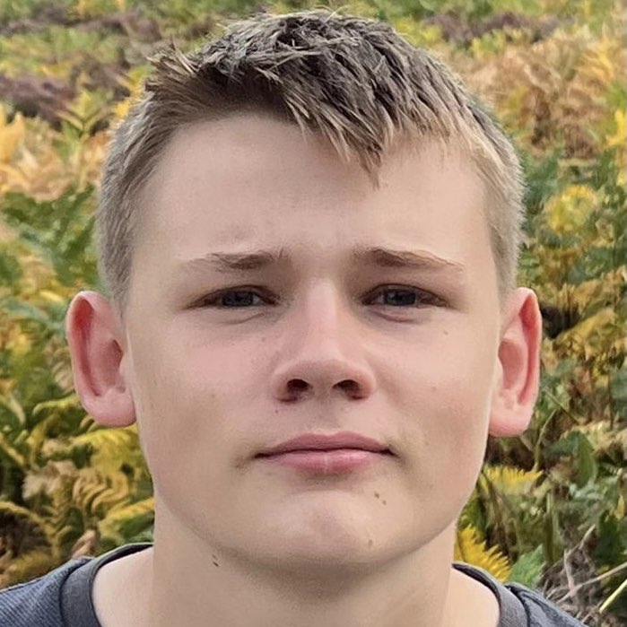

Hi, I'm Max.
I've been tutoring maths for about two years and am just about to start my first year of maths at the University of Warwick. This year I achived both an A* in A-Level mathematics (with about 95%) and an A* in A-level further mathematics (with about 85%) having already achived a 9 in GCSE maths. If you are interested in online tutoring for GCSE maths, GCSE further maths (AQA level 2 further maths, OCR add maths), A-level maths or A-level further maths (each for £25/h) let me know: